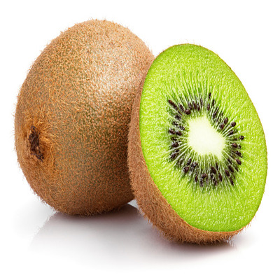

kiwi
Kiwi, (Actinidia deliciosa), also called kiwifruit or Chinese gooseberry, woody vine and edible fruit of the family Actinidiaceae. The plant is native to mainland China and Taiwan and is also grown commercially in New Zealand and California. The fruit has a slightly acid taste and can be eaten raw or cooked. The juice is sometimes used as a meat tenderizer. Raw kiwis are high in vitamins C and K.
In a 100-gram (3.5 oz) amount, green kiwifruit provides 255 kilojoules (61 kilocalories) of food energy, is 83% water and 15% carbohydrates, with negligible protein and fat (table). It is particularly rich in vitamin C (112% DV) and vitamin K (38% DV), has a moderate content of vitamin E (10% DV), with no other micronutrients in significant content. Gold kiwifruit has similar nutritional value to green kiwifruit, but contains higher vitamin C content (194% DV) and insignificant vitamin K.
Often in commercial farming, different breeds are used for rootstock, fruit bearing plants and pollinators.Therefore, the seeds produced are crossbreeds of their parents. Even if the same breeds are used for pollinators and fruit bearing plants, there is no guarantee that the fruit will have the same quality as the parent. Additionally, seedlings take seven years before they flower, so determining whether the kiwi is fruit bearing or a pollinator is time-consuming. Therefore, most kiwifruits, with the exception of rootstock and new cultivars, are propagated asexually. This is done by grafting the fruit producing plant onto rootstock grown from seedlings or, if the plant is desired to be a true cultivar, rootstock grown from cuttings of a mature plant.